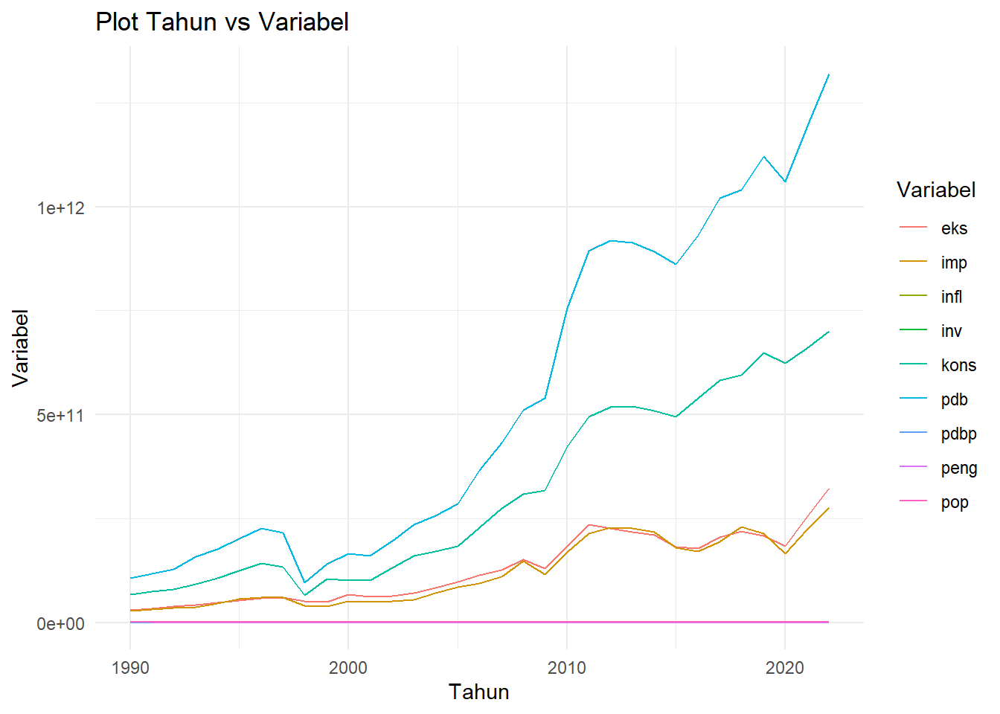
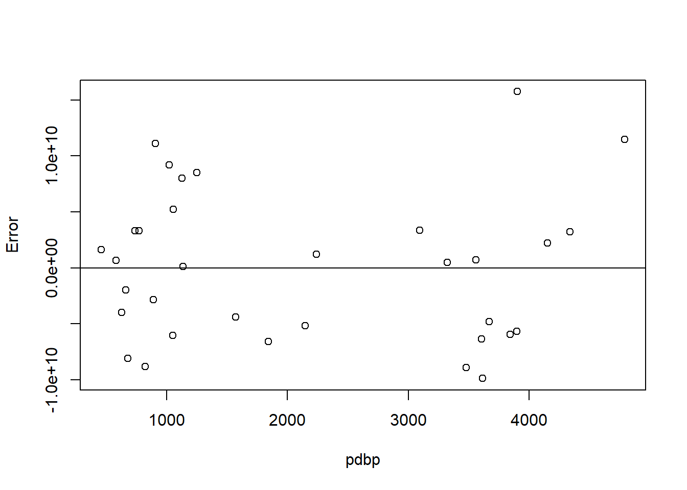
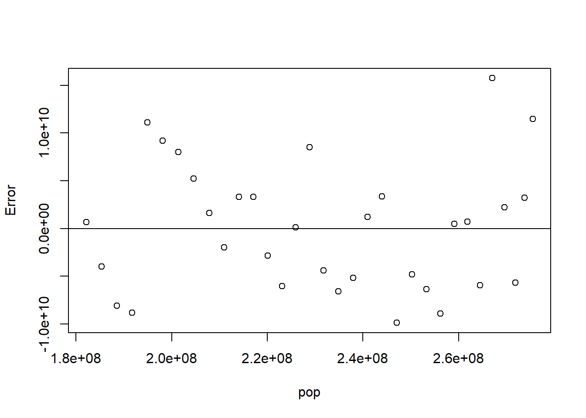
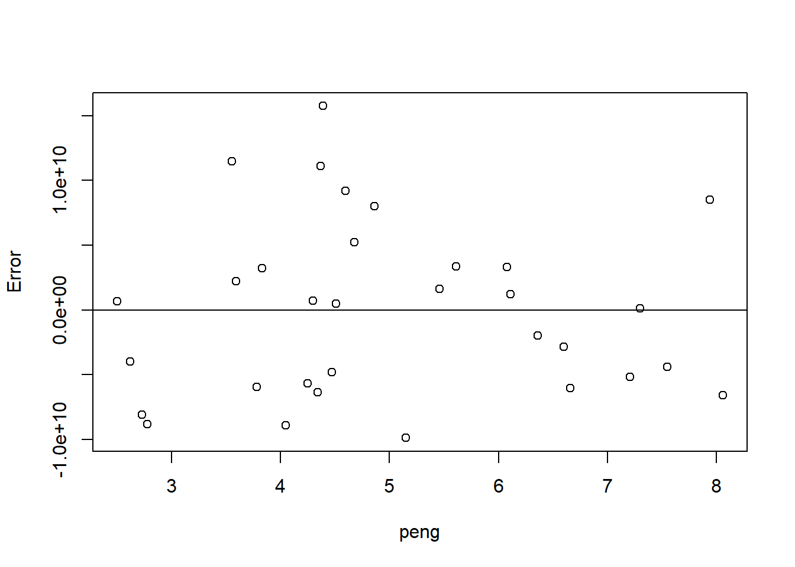
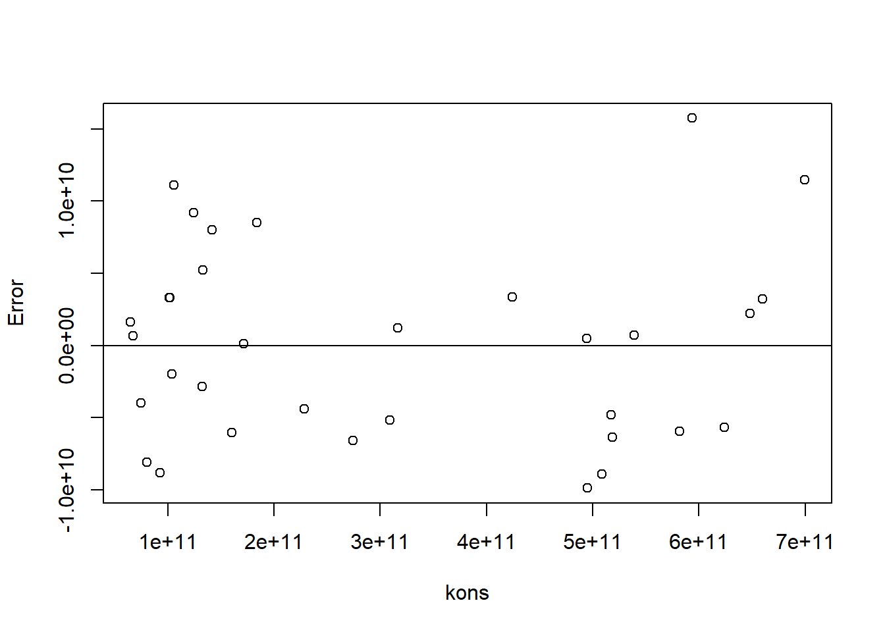
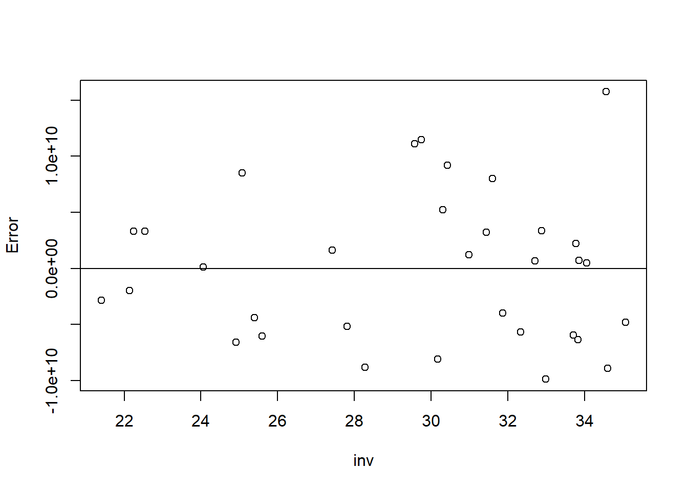
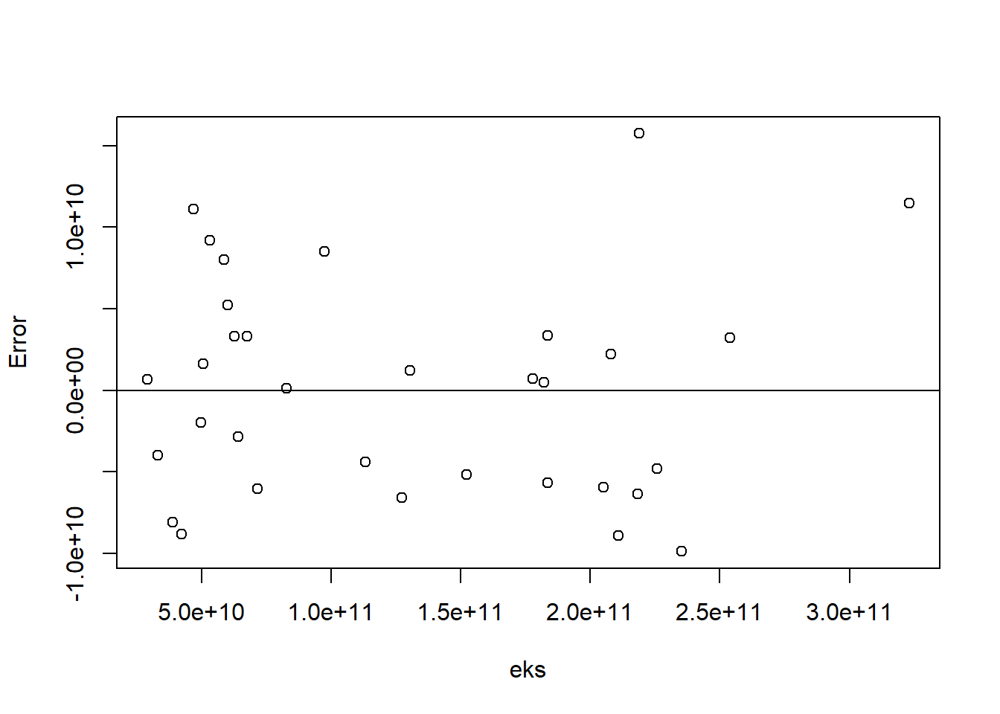
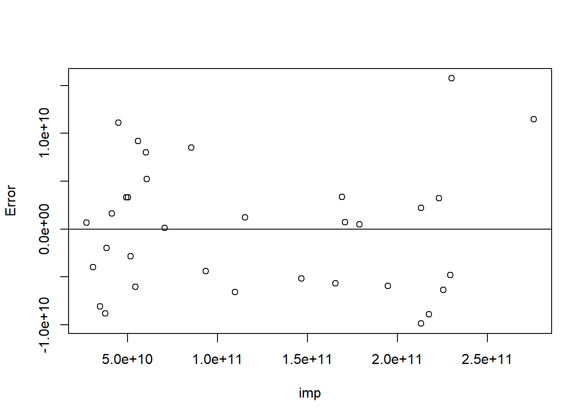
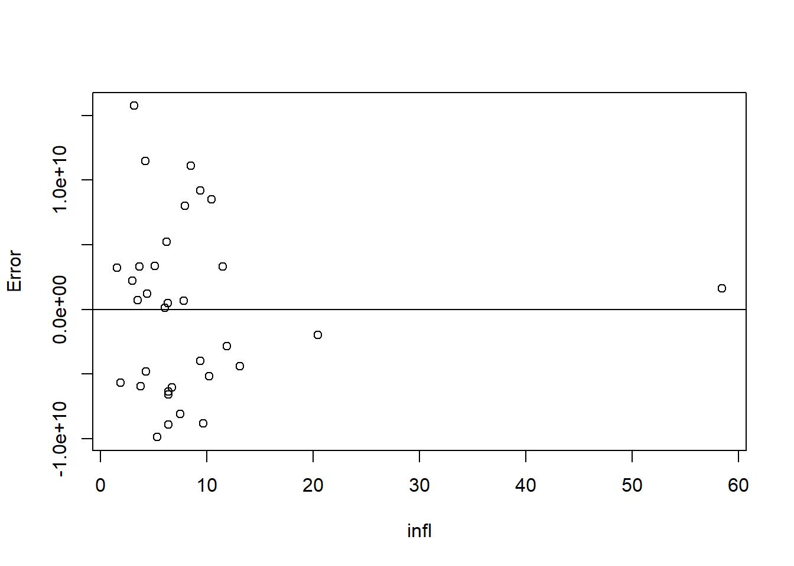

setwd("D:/METOPEL UAS/VINA METOPEL")
library(readxl)
library(writexl)
library(tidyverse)
library(kableExtra)
library(WDI)Pengaruh Faktor Ekonomi Makro terhadap Pertumbuhan Ekonomi Indonesia: Analisis Multivariat 1990-2022.
Metode Penelitian Politeknik APP Jakarta

1 Pendahuluan
1.1 Latar belakang
Pertumbuhan ekonomi merupakan salah satu indikator penting dalam menilai kesejahteraan suatu negara. Di Indonesia, berbagai faktor ekonomi makro seperti pendapatan per kapita, populasi, tingkat pengangguran, konsumsi rumah tangga, investasi, ekspor, impor, dan inflasi berpotensi mempengaruhi pertumbuhan ekonomi.
Dalam beberapa dekade terakhir, Indonesia telah mengalami berbagai perubahan signifikan dalam faktor-faktor ekonomi makro tersebut. Misalnya, tingkat pengangguran dan inflasi telah mengalami fluktuasi, sementara investasi dan ekspor telah menunjukkan tren pertumbuhan. Namun, bagaimana faktor-faktor ini mempengaruhi pertumbuhan ekonomi Indonesia masih belum sepenuhnya dipahami.
Oleh karena itu, penelitian ini bertujuan untuk menganalisis pengaruh faktor-faktor ekonomi makro terhadap pertumbuhan ekonomi Indonesia dari tahun 1990 hingga 2022. Dengan menggunakan pendekatan analisis multivariat, penelitian ini diharapkan dapat memberikan pemahaman yang lebih mendalam tentang dinamika pertumbuhan ekonomi di Indonesia dan membantu pembuat kebijakan dalam merumuskan strategi ekonomi yang efektif.
1.2 Ruang lingkup
Ruang Lingkup Penelitian
Ruang lingkup penelitian ini mencakup aspek-aspek berikut:
Geografis: Penelitian ini berfokus pada Indonesia. Semua data dan analisis akan berdasarkan konteks ekonomi Indonesia.
Waktu: Penelitian ini mencakup periode dari tahun 1990 hingga 2022. Semua data yang digunakan dalam penelitian ini akan diambil atau diestimasi untuk periode ini.
Variabel Ekonomi Makro: Penelitian ini akan menganalisis pengaruh berbagai faktor ekonomi makro terhadap pertumbuhan ekonomi, termasuk:
- Pendapatan Domestik Bruto (PDB)
- Pendapatan Domestik Bruto per kapita
- Populasi total
- Tingkat pengangguran
- Total nilai konsumsi masyarakat
- Besaran investasi yang masuk
- Besaran nilai ekspor
- Besaran nilai impor
- Besaran nilai inflasi
Metodologi: Penelitian ini akan menggunakan metode analisis multivariat untuk menentukan hubungan antara variabel-variabel tersebut dan pertumbuhan ekonomi.
1.3 Rumusan masalah
Bagaimana pengaruh Pendapatan Domestik Bruto (PDB) per kapita terhadap pertumbuhan ekonomi Indonesia dari tahun 1990 hingga 2022?
Apakah tingkat pengangguran di Indonesia memiliki dampak signifikan terhadap pertumbuhan ekonomi selama periode tersebut?
Bagaimana total nilai konsumsi masyarakat mempengaruhi pertumbuhan ekonomi Indonesia?
Apakah besaran investasi yang masuk berdampak signifikan terhadap pertumbuhan ekonomi Indonesia?
Bagaimana pengaruh besaran nilai ekspor dan impor terhadap pertumbuhan ekonomi Indonesia?
Apakah inflasi memiliki dampak signifikan terhadap pertumbuhan ekonomi Indonesia selama periode tersebut?
Rumusan masalah ini bertujuan untuk memahami bagaimana berbagai faktor ekonomi makro mempengaruhi pertumbuhan ekonomi di Indonesia.
1.4 Tujuan dan manfaat penelitian
Tujuan Penelitian:
Untuk memahami pengaruh variabel-variabel ekonomi makro terhadap pertumbuhan ekonomi di Indonesia.
Untuk menganalisis tren dan pola pertumbuhan ekonomi Indonesia selama periode 1990-2022.
Untuk memberikan rekomendasi kebijakan berdasarkan hasil analisis.
Manfaat Penelitian:
Bagi Mahasiswa: Penelitian ini dapat membantu mahasiswa dalam memahami aplikasi praktis dari konsep-konsep ekonomi makro yang mereka pelajari di kelas. Selain itu, penelitian ini juga dapat menjadi referensi untuk penelitian selanjutnya dan membantu mahasiswa dalam mengembangkan keterampilan analisis data dan penelitian mereka.
Bagi Akademisi dan Peneliti: Hasil penelitian ini dapat menjadi sumbangan pengetahuan baru dalam literatur ekonomi makro, khususnya yang berkaitan dengan pertumbuhan ekonomi di Indonesia. Penelitian ini juga dapat menjadi dasar untuk penelitian lebih lanjut tentang topik yang sama atau terkait.
Bagi Pembuat Kebijakan: Hasil penelitian ini dapat digunakan oleh pembuat kebijakan untuk merumuskan dan mengevaluasi kebijakan ekonomi, khususnya yang berkaitan dengan pertumbuhan ekonomi.
1.5 Package
2 Studi pustaka
Studi Pustaka
Pertumbuhan ekonomi di Indonesia dipengaruhi oleh berbagai faktor, termasuk ekspor, impor, investasi, konsumsi masyarakat, dan beberapa variabel makroekonomi lainnya. Berikut ini adalah analisis singkat berdasarkan data dan penelitian yang tersedia:
Ekspor dan Impor: Beberapa penelitian menunjukkan bahwa ekspor dan impor memiliki pengaruh signifikan terhadap pertumbuhan ekonomi Indonesia. Ekspor berperan penting dalam pertumbuhan ekonomi dan penciptaan lapangan kerja. Sementara itu, impor juga memiliki peran penting dalam pertumbuhan ekonomi, terutama dalam konteks akses terhadap barang dan teknologi asing yang dapat meningkatkan produktivitas dan efisiensi industri domestik.
Investasi: Investasi, baik domestik maupun asing langsung (FDI), berkontribusi signifikan terhadap pertumbuhan ekonomi Indonesia. Investasi meningkatkan stok modal, yang pada gilirannya meningkatkan produktivitas tenaga kerja dan kapasitas produksi.
Konsumsi Masyarakat: Konsumsi rumah tangga merupakan kontributor terbesar pada pertumbuhan Produk Domestik Bruto (PDB) nasional. Pada 2022, kontribusinya mencapai 51,87% dan menyumbang 2,61% terhadap pertumbuhan ekonomi Indonesia yang tercatat 5,31%.
Variabel Makroekonomi Lainnya: Variabel makroekonomi lain seperti tingkat pengangguran, inflasi, dan nilai tukar juga mempengaruhi pertumbuhan ekonomi. Sebagai contoh, penelitian menunjukkan bahwa tingkat pengangguran berpengaruh negatif terhadap pertumbuhan ekonomi.
Dalam konteks Indonesia, pertumbuhan ekonomi tahun 2022 mencapai 5,31%, lebih tinggi dibanding capaian tahun 2021 yang mengalami pertumbuhan sebesar 3,70 persen. Peningkatan ini didorong oleh akselerasi konsumsi swasta setelah dicabutnya pembatasan kegiatan masyarakat, serta kenaikan harga komoditas.
Namun, perlu diingat bahwa pertumbuhan ekonomi adalah fenomena yang kompleks dan dipengaruhi oleh banyak faktor yang saling berinteraksi. Oleh karena itu, penting untuk melakukan analisis yang komprehensif dan mempertimbangkan semua faktor yang relevan saat mengevaluasi dan merencanakan kebijakan ekonomi.
3 Metode penelitian
3.1 Data
| tahun | pdb | pdbp | pop | peng | kons | inv | eks | imp | infl |
|---|---|---|---|---|---|---|---|---|---|
| 1990 | 1,06E+11 | 582,679 | 1,82E+08 | 2,5 | 6,74E+10 | 32,70769 | 2,9E+10 | 2,72E+10 | 7,819191 |
| 1991 | 1,17E+11 | 629,1607 | 1,85E+08 | 2,62 | 7,49E+10 | 31,86943 | 3,31E+10 | 3,09E+10 | 9,419058 |
| 1992 | 1,28E+11 | 678,9777 | 1,89E+08 | 2,73 | 8,05E+10 | 30,17583 | 3,88E+10 | 3,47E+10 | 7,523517 |
| 1993 | 1,58E+11 | 824,0791 | 1,92E+08 | 2,78 | 9,25E+10 | 28,28067 | 4,23E+10 | 3,76E+10 | 9,671893 |
| 1994 | 1,77E+11 | 907,4718 | 1,95E+08 | 4,37 | 1,06E+11 | 29,57069 | 4,69E+10 | 4,49E+10 | 8,532005 |
| 1995 | 2,02E+11 | 1020,147 | 1,98E+08 | 4,597 | 1,24E+11 | 30,42981 | 5,32E+10 | 5,59E+10 | 9,420323 |
| 1996 | 2,27E+11 | 1129,093 | 2,01E+08 | 4,86 | 1,42E+11 | 31,60236 | 5,87E+10 | 6,01E+10 | 7,973281 |
| 1997 | 2,16E+11 | 1054,347 | 2,05E+08 | 4,68 | 1,33E+11 | 30,30768 | 6,01E+10 | 6,07E+10 | 6,226142 |
| 1998 | 9,54E+10 | 459,1919 | 2,08E+08 | 5,46 | 6,47E+10 | 27,42951 | 5,06E+10 | 4,12E+10 | 58,45104 |
| 1999 | 1,4E+11 | 663,5232 | 2,11E+08 | 6,36 | 1,04E+11 | 22,13876 | 4,97E+10 | 3,84E+10 | 20,47783 |
| 2000 | 1,65E+11 | 770,8654 | 2,14E+08 | 6,08 | 1,02E+11 | 22,2457 | 6,76E+10 | 5,03E+10 | 3,688619 |
| 2001 | 1,6E+11 | 739,0039 | 2,17E+08 | 6,08 | 1,01E+11 | 22,53927 | 6,26E+10 | 4,94E+10 | 11,50011 |
| 2002 | 1,96E+11 | 888,9014 | 2,2E+08 | 6,6 | 1,32E+11 | 21,40407 | 6,4E+10 | 5,16E+10 | 11,90012 |
| 2003 | 2,35E+11 | 1052,413 | 2,23E+08 | 6,66 | 1,6E+11 | 25,5985 | 7,16E+10 | 5,43E+10 | 6,757317 |
| 2004 | 2,57E+11 | 1136,755 | 2,26E+08 | 7,3 | 1,71E+11 | 24,05637 | 8,27E+10 | 7,07E+10 | 6,06406 |
| 2005 | 2,86E+11 | 1249,398 | 2,29E+08 | 7,94 | 1,84E+11 | 25,08141 | 9,74E+10 | 8,55E+10 | 10,4532 |
| 2006 | 3,65E+11 | 1572,798 | 2,32E+08 | 7,55 | 2,28E+11 | 25,40022 | 1,13E+11 | 9,34E+10 | 13,10867 |
| 2007 | 4,32E+11 | 1840,33 | 2,35E+08 | 8,06 | 2,75E+11 | 24,92028 | 1,27E+11 | 1,1E+11 | 6,406563 |
| 2008 | 5,1E+11 | 2144,39 | 2,38E+08 | 7,21 | 3,09E+11 | 27,81624 | 1,52E+11 | 1,47E+11 | 10,22666 |
| 2009 | 5,4E+11 | 2239,095 | 2,41E+08 | 6,11 | 3,17E+11 | 30,98519 | 1,3E+11 | 1,15E+11 | 4,386416 |
| 2010 | 7,55E+11 | 3094,443 | 2,44E+08 | 5,61 | 4,24E+11 | 32,88012 | 1,83E+11 | 1,69E+11 | 5,134204 |
| 2011 | 8,93E+11 | 3613,801 | 2,47E+08 | 5,15 | 4,95E+11 | 32,98433 | 2,35E+11 | 2,13E+11 | 5,356048 |
| 2012 | 9,18E+11 | 3668,212 | 2,5E+08 | 4,47 | 5,18E+11 | 35,07159 | 2,26E+11 | 2,29E+11 | 4,2795 |
| 2013 | 9,13E+11 | 3602,886 | 2,53E+08 | 4,34 | 5,19E+11 | 33,83136 | 2,18E+11 | 2,26E+11 | 6,412513 |
| 2014 | 8,91E+11 | 3476,625 | 2,56E+08 | 4,05 | 5,09E+11 | 34,60034 | 2,11E+11 | 2,17E+11 | 6,394925 |
| 2015 | 8,61E+11 | 3322,582 | 2,59E+08 | 4,51 | 4,95E+11 | 34,06279 | 1,82E+11 | 1,79E+11 | 6,363121 |
| 2016 | 9,32E+11 | 3558,819 | 2,62E+08 | 4,3 | 5,39E+11 | 33,85874 | 1,78E+11 | 1,71E+11 | 3,525805 |
| 2017 | 1,02E+12 | 3839,785 | 2,64E+08 | 3,78 | 5,82E+11 | 33,71059 | 2,05E+11 | 1,95E+11 | 3,808798 |
| 2018 | 1,04E+12 | 3902,662 | 2,67E+08 | 4,39 | 5,94E+11 | 34,57059 | 2,19E+11 | 2,3E+11 | 3,198346 |
| 2019 | 1,12E+12 | 4151,228 | 2,7E+08 | 3,59 | 6,48E+11 | 33,78014 | 2,08E+11 | 2,13E+11 | 3,030587 |
| 2020 | 1,06E+12 | 3895,618 | 2,72E+08 | 4,25 | 6,24E+11 | 32,34341 | 1,84E+11 | 1,66E+11 | 1,920968 |
| 2021 | 1,19E+12 | 4334,216 | 2,74E+08 | 3,83 | 6,6E+11 | 31,44898 | 2,54E+11 | 2,23E+11 | 1,56013 |
| 2022 | 1,32E+12 | 4787,999 | 2,76E+08 | 3,554 | 7E+11 | 29,74534 | 3,23E+11 | 2,76E+11 | 4,209464 |
Penelitian ini berfokus pada analisis pengaruh variabel-variabel ekonomi makro, termasuk Pendapatan Domestik Bruto (PDB), PDB per kapita, populasi total, tingkat pengangguran, total nilai konsumsi masyarakat, besaran investasi yang masuk, besaran nilai ekspor dan impor, serta inflasi, terhadap pertumbuhan ekonomi Indonesia selama periode 1990 hingga 2022. Tujuannya adalah untuk memahami dinamika pertumbuhan ekonomi di Indonesia dan memberikan rekomendasi kebijakan berdasarkan hasil analisis. Penelitian ini diharapkan dapat menjadi referensi bagi mahasiswa, akademisi, peneliti, dan pembuat kebijakan dalam merumuskan strategi ekonomi yang efektif.
3.2 Metode analisis
Berikut adalah contoh model analisis yang dapat digunakan dalam penelitian ini:
Model yang digunakan dalam penelitian ini adalah model regresi linier berganda. Model ini digunakan untuk menganalisis hubungan antara satu variabel dependen (Y) dan beberapa variabel independen (X). Dalam konteks penelitian ini, variabel dependen adalah pertumbuhan ekonomi, sedangkan variabel independennya adalah variabel-variabel ekonomi makro yang telah disebutkan sebelumnya.
Model regresi linier berganda dapat ditulis dalam bentuk matematika sebagai berikut:
\[Y = \beta_0 + \beta_1X_1 + \beta_2X_2 + \beta_3X_3 + \ldots + \beta_nX_n + \epsilon\]
dimana: - \(Y\) adalah pertumbuhan ekonomi - \(\beta_0\) adalah konstanta - \(\beta_1, \beta_2, \ldots, \beta_n\) adalah koefisien regresi yang menunjukkan pengaruh variabel independen terhadap variabel dependen - \(X_1, X_2, \ldots, X_n\) adalah variabel-variabel independen (dalam hal ini, variabel-variabel ekonomi makro) - \(\epsilon\) adalah galat atau kesalahan pengukuran
Dengan menggunakan model ini, kita dapat mengestimasi pengaruh masing-masing variabel ekonomi makro terhadap pertumbuhan ekonomi. Selain itu, kita juga dapat menguji signifikansi pengaruh tersebut menggunakan uji t-statistik atau uji F. Jika nilai p kurang dari 0,05, maka kita dapat menyimpulkan bahwa variabel tersebut memiliki pengaruh yang signifikan terhadap pertumbuhan ekonomi.
4 Pembahasan
4.1 Pembahasan masalah
4.1.1 Plot dan Data
#impor dataset
read_excel("pertumbuhan.xlsx")# A tibble: 33 × 10
year pdb pdbp pop peng kons inv eks imp infl
<dbl> <dbl> <dbl> <dbl> <dbl> <dbl> <dbl> <dbl> <dbl> <dbl>
1 1990 106140727334. 583. 182159874 2.5 6.74e10 32.7 2.90e10 2.72e10 7.82
2 1991 116621996217. 629. 185361228 2.62 7.49e10 31.9 3.31e10 3.09e10 9.42
3 1992 128026966580. 679. 188558416 2.73 8.05e10 30.2 3.88e10 3.47e10 7.52
4 1993 158006700302. 824. 191737287 2.78 9.25e10 28.3 4.23e10 3.76e10 9.67
5 1994 176892143932. 907. 194928533 4.37 1.06e11 29.6 4.69e10 4.49e10 8.53
6 1995 202132028723. 1020. 198140162 4.60 1.24e11 30.4 5.32e10 5.59e10 9.42
7 1996 227369679375. 1129. 201373791 4.86 1.42e11 31.6 5.87e10 6.01e10 7.97
8 1997 215748998610. 1054. 204628007 4.68 1.33e11 30.3 6.01e10 6.07e10 6.23
9 1998 95445547873. 459. 207855486 5.46 6.47e10 27.4 5.06e10 4.12e10 58.5
10 1999 140001351215. 664. 210996910 6.36 1.04e11 22.1 4.97e10 3.84e10 20.5
# ℹ 23 more rowsdat <- read_excel("pertumbuhan.xlsx")
kbl(dat) %>%
kable_styling(bootstrap_options = c("striped", "hover", "condensed", "responsive"))| year | pdb | pdbp | pop | peng | kons | inv | eks | imp | infl |
|---|---|---|---|---|---|---|---|---|---|
| 1990 | 1.061407e+11 | 582.6790 | 182159874 | 2.500 | 67388496928 | 32.70769 | 28982531183 | 27157275247 | 7.819191 |
| 1991 | 1.166220e+11 | 629.1607 | 185361228 | 2.620 | 74896533640 | 31.86943 | 33063806609 | 30891188671 | 9.419058 |
| 1992 | 1.280270e+11 | 678.9777 | 188558416 | 2.730 | 80452086782 | 30.17583 | 38801726176 | 34720875700 | 7.523517 |
| 1993 | 1.580067e+11 | 824.0791 | 191737287 | 2.780 | 92452872768 | 28.28067 | 42274397859 | 37555937063 | 9.671893 |
| 1994 | 1.768921e+11 | 907.4718 | 194928533 | 4.370 | 105574129353 | 29.57069 | 46896633114 | 44869883142 | 8.532005 |
| 1995 | 2.021320e+11 | 1020.1467 | 198140162 | 4.597 | 124466951683 | 30.42981 | 53185312942 | 55882279824 | 9.420323 |
| 1996 | 2.273697e+11 | 1129.0927 | 201373791 | 4.860 | 141781326047 | 31.60236 | 58717201042 | 60116979038 | 7.973281 |
| 1997 | 2.157490e+11 | 1054.3474 | 204628007 | 4.680 | 133076708202 | 30.30768 | 60106038404 | 60700151259 | 6.226142 |
| 1998 | 9.544555e+10 | 459.1919 | 207855486 | 5.460 | 64694378233 | 27.42951 | 50555726235 | 41249712042 | 58.451045 |
| 1999 | 1.400014e+11 | 663.5232 | 210996910 | 6.360 | 103522314705 | 22.13876 | 49720260590 | 38402067922 | 20.477831 |
| 2000 | 1.650210e+11 | 770.8654 | 214072421 | 6.080 | 101736066246 | 22.24570 | 67621169166 | 50264686470 | 3.688619 |
| 2001 | 1.604469e+11 | 739.0039 | 217112437 | 6.080 | 101322506472 | 22.53927 | 62625875834 | 49355195402 | 11.500115 |
| 2002 | 1.956606e+11 | 888.9014 | 220115092 | 6.600 | 132310082252 | 21.40407 | 63956798805 | 51638437161 | 11.900118 |
| 2003 | 2.347725e+11 | 1052.4132 | 223080121 | 6.660 | 159969308159 | 25.59850 | 71553141045 | 54323622341 | 6.757317 |
| 2004 | 2.568369e+11 | 1136.7552 | 225938595 | 7.300 | 171486082504 | 24.05637 | 82744351781 | 70744690514 | 6.064060 |
| 2005 | 2.858686e+11 | 1249.3977 | 228805144 | 7.940 | 183992161901 | 25.08141 | 97387627566 | 85533801154 | 10.453198 |
| 2006 | 3.645705e+11 | 1572.7979 | 231797427 | 7.550 | 228472903174 | 25.40022 | 113143425288 | 93411754076 | 13.108672 |
| 2007 | 4.322167e+11 | 1840.3299 | 234858289 | 8.060 | 274642139810 | 24.92028 | 127226102177 | 109755093425 | 6.406563 |
| 2008 | 5.102286e+11 | 2144.3895 | 237936543 | 7.210 | 309306990310 | 27.81624 | 152090401422 | 146706628549 | 10.226665 |
| 2009 | 5.395801e+11 | 2239.0953 | 240981299 | 6.110 | 316748382750 | 30.98519 | 130357798591 | 115216544854 | 4.386416 |
| 2010 | 7.550942e+11 | 3094.4431 | 244016173 | 5.610 | 424492610027 | 32.88012 | 183480562961 | 169158027607 | 5.134204 |
| 2011 | 8.929691e+11 | 3613.8009 | 247099697 | 5.150 | 494913450646 | 32.98433 | 235095129136 | 212996885270 | 5.356048 |
| 2012 | 9.178699e+11 | 3668.2121 | 250222695 | 4.470 | 517579927881 | 35.07159 | 225744403268 | 229362102380 | 4.279500 |
| 2013 | 9.125241e+11 | 3602.8855 | 253275918 | 4.340 | 518582560786 | 33.83136 | 218308408831 | 225519356300 | 6.412513 |
| 2014 | 8.908148e+11 | 3476.6249 | 256229761 | 4.050 | 509003681733 | 34.60034 | 210820082828 | 217485215773 | 6.394925 |
| 2015 | 8.608542e+11 | 3322.5817 | 259091970 | 4.510 | 494560910748 | 34.06279 | 182158298805 | 178863652303 | 6.363121 |
| 2016 | 9.318774e+11 | 3558.8189 | 261850182 | 4.300 | 538874867134 | 33.85874 | 177886012744 | 170835000833 | 3.525805 |
| 2017 | 1.015619e+12 | 3839.7851 | 264498852 | 3.780 | 581701454953 | 33.71059 | 204924485910 | 194777319199 | 3.808798 |
| 2018 | 1.042272e+12 | 3902.6617 | 267066843 | 4.390 | 593885231700 | 34.57059 | 218905647885 | 230045612383 | 3.198346 |
| 2019 | 1.119100e+12 | 4151.2276 | 269582878 | 3.590 | 648299754544 | 33.78014 | 208057763662 | 213034646338 | 3.030587 |
| 2020 | 1.059055e+12 | 3895.6182 | 271857970 | 4.250 | 624142240216 | 32.34341 | 183546577016 | 165646843305 | 1.920968 |
| 2021 | 1.186505e+12 | 4334.2160 | 273753191 | 3.830 | 660039197113 | 31.44898 | 254008548673 | 222939963036 | 1.560130 |
| 2022 | 1.319100e+12 | 4787.9993 | 275501339 | 3.554 | 699623981271 | 29.74534 | 323079953660 | 275703237974 | 4.209464 |
# regresi
reg1<-lm(pdb~pdbp+pop+peng+kons+inv+eks+imp+infl,data=dat)4.2 Plot
##PLOT
### Membuat data frame
data <- data.frame(
year = c(1990:2022),
pdb = c(1.06E+11, 1.17E+11, 1.28E+11, 1.58E+11, 1.77E+11, 2.02E+11, 2.27E+11, 2.16E+11, 9.54E+10, 1.4E+11, 1.65E+11, 1.6E+11, 1.96E+11, 2.35E+11, 2.57E+11, 2.86E+11, 3.65E+11, 4.32E+11, 5.1E+11, 5.4E+11, 7.55E+11, 8.93E+11, 9.18E+11, 9.13E+11, 8.91E+11, 8.61E+11, 9.32E+11, 1.02E+12, 1.04E+12, 1.12E+12, 1.06E+12, 1.19E+12, 1.32E+12),
pdbp = c(582.679, 629.1607, 678.9777, 824.0791, 907.4718, 1020.147, 1129.093, 1054.347, 459.1919, 663.5232, 770.8654, 739.0039, 888.9014, 1052.413, 1136.755, 1249.398, 1572.798, 1840.33, 2144.39, 2239.095, 3094.443, 3613.801, 3668.212, 3602.886, 3476.625, 3322.582, 3558.819, 3839.785, 3902.662, 4151.228, 3895.618, 4334.216, 4787.999),
pop = c(1.82E+08, 1.85E+08, 1.89E+08, 1.92E+08, 1.95E+08, 1.98E+08, 2.01E+08, 2.05E+08, 2.08E+08, 2.11E+08, 2.14E+08, 2.17E+08, 2.2E+08, 2.23E+08, 2.26E+08, 2.29E+08, 2.32E+08, 2.35E+08, 2.38E+08, 2.41E+08, 2.44E+08, 2.47E+08, 2.5E+08, 2.53E+08, 2.56E+08, 2.59E+08, 2.62E+08, 2.64E+08, 2.67E+08, 2.7E+08, 2.72E+08, 2.74E+08, 2.76E+08),
peng = c(NA, 2.62, 2.73, 2.78, 4.37, 4.597, 4.86, 4.68, 5.46, 6.36, 6.08, 6.08, 6.6, 6.66, 7.3, 7.94, 7.55, 8.06, 7.21, 6.11, 5.61, 5.15, 4.47, 4.34, 4.05, 4.51, 4.3, 3.78, 4.39, 3.59, 4.25, 3.83, 3.554),
kons = c(6.74E+10, 7.49E+10, 8.05E+10, 9.25E+10, 1.06E+11, 1.24E+11, 1.42E+11, 1.33E+11, 6.47E+10, 1.04E+11, 1.02E+11, 1.01E+11, 1.32E+11, 1.6E+11, 1.71E+11, 1.84E+11, 2.28E+11, 2.75E+11, 3.09E+11, 3.17E+11, 4.24E+11, 4.95E+11, 5.18E+11, 5.19E+11, 5.09E+11, 4.95E+11, 5.39E+11, 5.82E+11, 5.94E+11, 6.48E+11, 6.24E+11, 6.6E+11, 7E+11),
inv = c(32.70769, 31.86943, 30.17583, 28.28067, 29.57069, 30.42981, 31.60236, 30.30768, 27.42951, 22.13876, 22.2457, 22.53927, 21.40407, 25.5985, 24.05637, 25.08141, 25.40022, 24.92028, 27.81624, 30.98519, 32.88012, 32.98433, 35.07159, 33.83136, 34.60034, 34.06279, 33.85874, 33.71059, 34.57059, 33.78014, 32.34341, 31.44898, 29.74534),
eks = c(2.9E+10, 3.31E+10, 3.88E+10, 4.23E+10, 4.69E+10, 5.32E+10, 5.87E+10, 6.01E+10, 5.06E+10, 4.97E+10, 6.76E+10, 6.26E+10, 6.4E+10, 7.16E+10, 8.27E+10, 9.74E+10, 1.13E+11, 1.27E+11, 1.52E+11, 1.3E+11, 1.83E+11, 2.35E+11, 2.26E+11, 2.18E+11, 2.11E+11, 1.82E+11, 1.78E+11, 2.05E+11, 2.19E+11, 2.08E+11, 1.84E+11, 2.54E+11, 3.23E+11),
imp = c(2.72E+10, 3.09E+10, 3.47E+10, 3.76E+10, 4.49E+10, 5.59E+10, 6.01E+10, 6.07E+10, 4.12E+10, 3.84E+10, 5.03E+10, 4.94E+10, 5.16E+10, 5.43E+10, 7.07E+10, 8.55E+10, 9.34E+10, 1.1E+11, 1.47E+11, 1.15E+11, 1.69E+11, 2.13E+11, 2.29E+11, 2.26E+11, 2.17E+11, 1.79E+11, 1.71E+11, 1.95E+11, 2.3E+11, 2.13E+11, 1.66E+11, 2.23E+11, 2.76E+11),
infl = c(7.819191, 9.419058, 7.523517, 9.671893, 8.532005, 9.420323, 7.973281, 6.226142, 58.45104, 20.47783, 3.688619, 11.50011, 11.90012, 6.757317, 6.06406, 10.4532, 13.10867, 6.406563, 10.22666, 4.386416, 5.134204, 5.356048, 4.2795, 6.412513, 6.394925, 6.363121, 3.525805, 3.808798, 3.198346, 3.030587, 1.920968, 1.56013, 4.209464)
)
# Mengubah format data frame dari wide ke long
data_long <- data %>% pivot_longer(cols = c(pdb, pdbp, pop, peng, kons, inv, eks, imp, infl), names_to = "Variable", values_to = "Value")
#Plot
ggplot(data_long, aes(x=year, y=Value, color=Variable)) +
geom_line() +
labs(title="Plot Tahun vs Variabel", x="Tahun", y="Variabel") +
theme_minimal() +
scale_color_discrete(name = "Variabel")Warning: Removed 1 row containing missing values (`geom_line()`).
dat$resid <- resid(reg1)
# Membuat plot error untuk setiap variabel independen
variables <- c("pdbp", "pop", "peng", "kons", "inv", "eks", "imp", "infl")
for(i in 1:length(variables)) {
plot(dat[[variables[i]]], dat$resid, xlab=variables[i], ylab="Error")
abline(h=0) # membuat garis horizontal di y=0
}







4.3 Analisis masalah
Hasil regresinya adalah
summary(reg1)
Call:
lm(formula = pdb ~ pdbp + pop + peng + kons + inv + eks + imp +
infl, data = dat)
Residuals:
Min 1Q Median 3Q Max
-9.889e+09 -5.677e+09 4.955e+08 3.307e+09 1.575e+10
Coefficients:
Estimate Std. Error t value Pr(>|t|)
(Intercept) -4.160e+10 8.249e+10 -0.504 0.618619
pdbp 8.480e+07 2.994e+07 2.833 0.009203 **
pop 5.125e+02 4.108e+02 1.248 0.224240
peng -1.390e+10 2.100e+09 -6.621 7.56e-07 ***
kons 1.052e+00 1.700e-01 6.186 2.16e-06 ***
inv -1.412e+09 1.037e+09 -1.361 0.186234
eks 9.059e-01 2.103e-01 4.308 0.000241 ***
imp -4.926e-01 1.661e-01 -2.965 0.006741 **
infl 1.894e+08 1.865e+08 1.016 0.319956
---
Signif. codes: 0 '***' 0.001 '**' 0.01 '*' 0.05 '.' 0.1 ' ' 1
Residual standard error: 7.671e+09 on 24 degrees of freedom
Multiple R-squared: 0.9997, Adjusted R-squared: 0.9996
F-statistic: 1.086e+04 on 8 and 24 DF, p-value: < 2.2e-16Berdasarkan hasil regresi yang Anda berikan, berikut adalah interpretasinya:
Nilai R-squared sebesar 0,9996 menunjukkan bahwa model regresi dapat menjelaskan 99,96% variasi dalam pertumbuhan ekonomi yang dijelaskan oleh variabel-variabel independen dalam model.
Intercept sebesar -4,16 tidak signifikan, yang berarti bahwa jika semua variabel independen bernilai nol, pertumbuhan ekonomi diharapkan akan berkurang sebesar 4,16 unit, tetapi ini tidak signifikan.
PDB per kapita memiliki koefisien positif signifikan sebesar 8,48, yang berarti bahwa peningkatan PDB per kapita sebesar satu unit akan meningkatkan pertumbuhan ekonomi sebesar 8,48 unit.
Populasi memiliki koefisien positif sebesar 5,15 tetapi tidak signifikan, yang berarti bahwa peningkatan populasi tidak memiliki pengaruh signifikan terhadap pertumbuhan ekonomi.
Angka pengangguran memiliki koefisien negatif sangat signifikan sebesar -1,39, yang berarti bahwa peningkatan angka pengangguran sebesar satu unit akan menurunkan pertumbuhan ekonomi sebesar 1,39 unit.
Nilai konsumsi masyarakat memiliki koefisien positif sangat signifikan sebesar 1,05, yang berarti bahwa peningkatan nilai konsumsi masyarakat sebesar satu unit akan meningkatkan pertumbuhan ekonomi sebesar 1,05 unit.
Nilai investasi luar negeri memiliki koefisien negatif sebesar -1,41 tetapi tidak signifikan, yang berarti bahwa peningkatan investasi luar negeri tidak memiliki pengaruh signifikan terhadap pertumbuhan ekonomi.
Nilai ekspor memiliki koefisien positif sangat signifikan sebesar 9,05, yang berarti bahwa peningkatan nilai ekspor sebesar satu unit akan meningkatkan pertumbuhan ekonomi sebesar 9,05 unit.
Nilai impor memiliki koefisien negatif signifikan sebesar -4,92, yang berarti bahwa peningkatan nilai impor sebesar satu unit akan menurunkan pertumbuhan ekonomi sebesar 4,92 unit.
Nilai inflasi memiliki koefisien positif sebesar 1,89 tetapi tidak signifikan, yang berarti bahwa peningkatan inflasi tidak memiliki pengaruh signifikan terhadap pertumbuhan ekonomi.
4.4 Kesimpulan
Berdasarkan hasil analisis regresi, berikut adalah kesimpulan dan asumsi yang dapat diambil:
PDB per kapita: Peningkatan PDB per kapita berdampak positif dan signifikan terhadap pertumbuhan ekonomi. Hal ini mungkin karena peningkatan PDB per kapita mencerminkan peningkatan produktivitas dan pendapatan individu, yang pada gilirannya dapat meningkatkan konsumsi dan investasi, dua komponen penting dari pertumbuhan ekonomi.
Populasi: Meskipun memiliki koefisien positif, populasi tidak signifikan dalam mempengaruhi pertumbuhan ekonomi. Hal ini mungkin karena pertumbuhan populasi tidak selalu berarti peningkatan tenaga kerja atau konsumen. Faktor lain seperti struktur demografi, tingkat pendidikan, dan kesehatan juga berperan penting.
Angka Pengangguran: Angka pengangguran berdampak negatif dan sangat signifikan terhadap pertumbuhan ekonomi. Hal ini sesuai dengan teori ekonomi yang menyatakan bahwa pengangguran menunjukkan adanya sumber daya (tenaga kerja) yang tidak dimanfaatkan secara efisien.
Nilai Konsumsi Masyarakat: Nilai konsumsi masyarakat berdampak positif dan sangat signifikan terhadap pertumbuhan ekonomi. Hal ini menunjukkan bahwa konsumsi masyarakat merupakan pendorong utama pertumbuhan ekonomi di Indonesia.
Nilai Investasi Luar Negeri: Meskipun memiliki koefisien negatif, nilai investasi luar negeri tidak signifikan dalam mempengaruhi pertumbuhan ekonomi. Hal ini mungkin karena faktor lain seperti stabilitas politik dan ekonomi, infrastruktur, dan kebijakan pemerintah juga mempengaruhi efektivitas investasi luar negeri.
Nilai Ekspor: Nilai ekspor berdampak positif dan sangat signifikan terhadap pertumbuhan ekonomi. Hal ini menunjukkan bahwa ekspor merupakan komponen penting dalam perekonomian Indonesia.
Nilai Impor: Nilai impor berdampak negatif dan signifikan terhadap pertumbuhan ekonomi. Hal ini mungkin karena impor dapat mengurangi permintaan domestik untuk barang dan jasa buatan dalam negeri.
Nilai Inflasi: Meskipun memiliki koefisien positif, inflasi tidak signifikan dalam mempengaruhi pertumbuhan ekonomi. Hal ini mungkin karena tingkat inflasi yang moderat dapat merangsang pertumbuhan ekonomi, tetapi inflasi yang tinggi dapat menghambat pertumbuhan ekonomi.
Dalam konteks perekonomian Indonesia dari tahun 1990 hingga 2022, terdapat beberapa kejadian penting yang mungkin mempengaruhi hasil analisis ini, seperti krisis ekonomi Asia pada tahun 1997-1998, reformasi politik pada akhir tahun 1990-an, dan dampak pandemi COVID-19 pada tahun 2020-2022. Oleh karena itu, penting untuk mempertimbangkan konteks historis dan kejadian penting ini saat menafsirkan hasil analisis.
5 Referensi
PENGARUH EKSPOR DAN IMPOR TERHADAP PERTUMBUHAN EKONOMI DI INDONESIA. https://www.researchgate.net/publication/363627071_PENGARUH_EKSPOR_DAN_IMPOR_TERHADAP_PERTUMBUHAN_EKONOMI_DI_INDONESIA/fulltext/637e7d821766b34c544c5111/PENGARUH-EKSPOR-DAN-IMPOR-TERHADAP-PERTUMBUHAN-EKONOMI-DI-INDONESIA.pdf.
ANALISIS PENGARUH EKSPOR DAN IMPOR TERHADAP PERTUMBUHAN EKONOMI DI …. https://online-journal.unja.ac.id/mankeu/article/download/12512/10911/34656.
PENGARUH FOREIGN DIRECT INVESTMENT (FDI) DAN EKSPOR TERHADAP …. https://ejournal.unib.ac.id/convergence-jep/article/download/28471/12700.
PENGARUH PENGANGGURAN, TENAGA KERJA DAN INFLASI TERHADAP PERTUMBUHAN …. https://jurnal.umsb.ac.id/index.php/menaraekonomi/article/view/4496.
Analisis Pengaruh Variabel Makroekonomi terhadap Pertumbuhan Ekonomi …. https://www.researchgate.net/publication/373836653_Analisis_Pengaruh_Variabel_Makroekonomi_terhadap_Pertumbuhan_Ekonomi_Selama_Periode_2001-2022/fulltext/64ffc100849bbb203b914405/Analisis-Pengaruh-Variabel-Makroekonomi-terhadap-Pertumbuhan-Ekonomi-Selama-Periode-2001-2022.pdf.
ANALISIS PENGARUH EKSPOR TERHADAP PERTUMBUHAN EKONOMI INDONESIA - Kemendag. https://jurnal.kemendag.go.id/index.php/bilp/article/download/185/144.
ANALISIS PENGARUH EKSPOR DAN IMPOR TERHADAP PERTUMBUHAN EKONOMI DI …. https://online-journal.unja.ac.id/mankeu/article/view/12512.
Pengaruh Inflasi dan Tingkat Pengangguran terhadap Pertumbuhan Ekonomi …. https://www.kompasiana.com/yopimardiani4493/65826be4de948f48532dd8f2/pengaruh-inflasi-dan-tingkat-pengangguran-terhadap-pertumbuhan-ekonomi-di-indonesia-tahun-2017-2021.